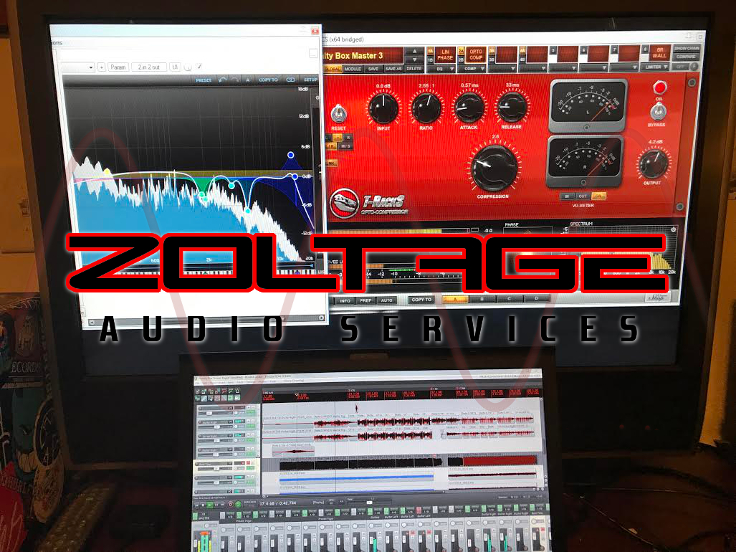

Zoltage Audio Services is an Arizona based audio production company run and managed
by Austin Kelly. I have over 7 years of experience as an audio engineer and have been
interested in music my entire life. I offer a variety of different remote audio services such as
mixing, mastering, composition and drum programming. Live drum tracking
can also be requested and is in Scottsdale Arizona. I look to provide
professional work for unbeatable prices.
Originally founded in early 2017 as a way of taking my hobby more seriously, the company is constantly improving as I receive more clients.
Studio Gear
Amps/Cabs
- Marshall 1960a 4x12 Cabinet
- Orange Micro Terror
- Peavey 5150 Signature
DAW's
- FL Studio 9
- REAPER (Main)
- Melodyne Studio 4
Instruments
- Gibson Les Paul Studio Guitar
- Ibanez Talman Bass
- Misc. Instruments (Xylophone, Shakers, Bells)
- Peavey Handcrafted Acoustic Guitar
- Tama Superstar Drum Kit
Microphones
- Audio Technica AT2035
- Audix D6
- CAD TSM411 (x2)
- Karma K10 (x2)
- Shure SM57
Monitoring
- AKG K240 Headphones
- KRK Rokit 4
Pedals
- Boss TU-3 Tuner
- Electro Faustus EF103 Fuzz/Oscillator
- Ernie Ball VP jr Volume Pedal
- ISP Decimator II
- Joyo JF11 EQ
- Maxon OD808 Overdrive
Plug-Ins/Other Software
- Antress Modern Black Dragon
- Celemony Melodyne 4 Assistant
- Celemony Melodyne 4 Editor
- Celemony Melodyne 4 Essential
- Clarity
- Clone Ensemble V4.2
- Cockos ReaPlugs Bundle
- DBlue Glitch V1.3
- Digitalfishphones Spitfish De-esser
- DMG Audio EQuilibrium
- EVM Grand Piano
- Guitar Pro 6
- Line 6 Pod Farm 2.0
- IK Multimedia T-Racks British Studio Series
- IK Multimedia T-Racks Classic
- IK Multimedia T-Racks Classik Studio Reverb Bundle
- IK Multimedia T-Racks Deluxe
- IK Multimedia T-Racks Grand
- IK Multimedia T-Racks Multiband Series
- IK Multimedia T-Racks Vintage Compressors Bundle
- Krakli Gargoyle
- Kontakt 5
- Slate Digital Revival
- TDR Proximity
- Terry West Deharsher
- Terry West VocEQPro
- Terry West VocRider
- TSE X30 V1.6
- TT Dynamic Range Meter
- Voxengo Audio Protector
- Voxengo Stereo Touch
- Voxengo Tube Warmer
- VSTNotepad
Preamps
- ART Tube MP Project Series
- Line 6 UX-2 (Pod Farm License)
- Symetrix 528E
- Tascam US-1800
zoltageaudio@gmail.com

928-362-1172